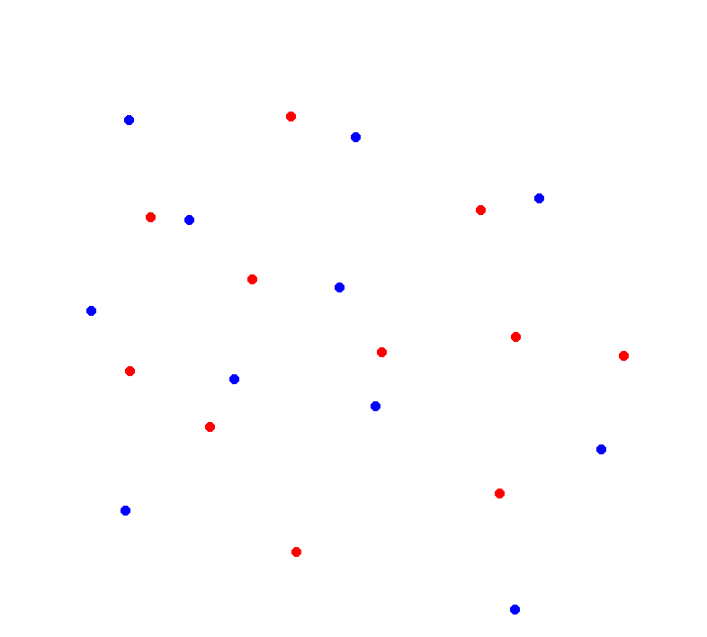
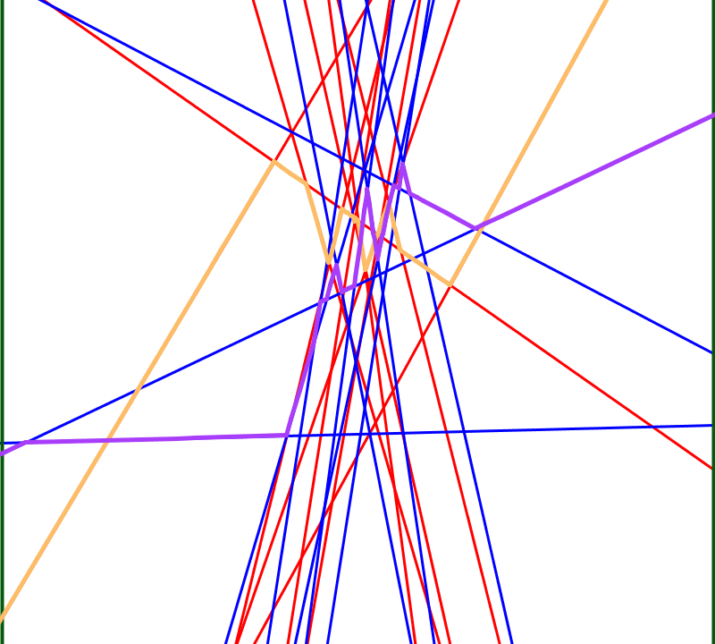
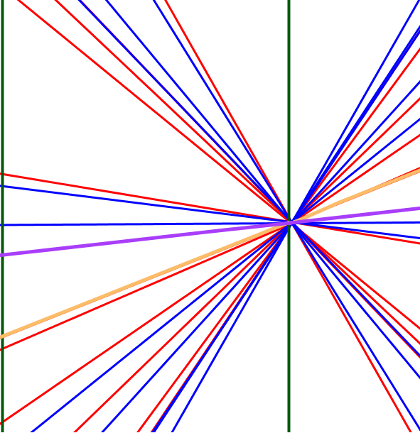
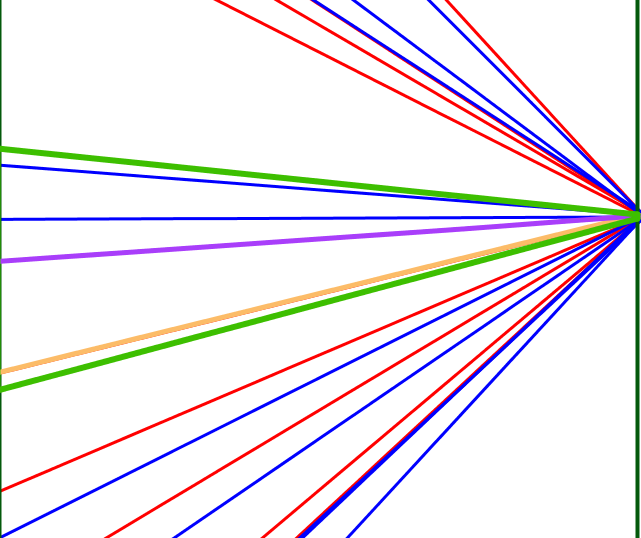
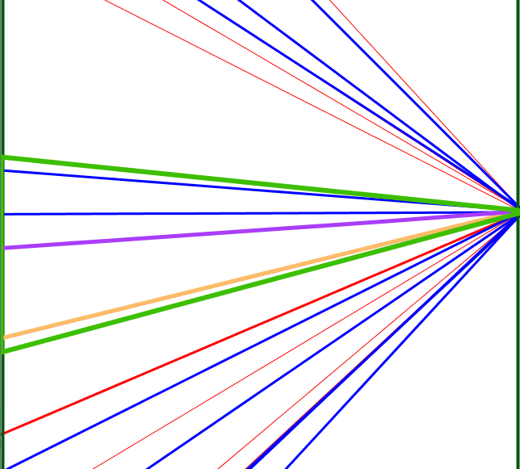
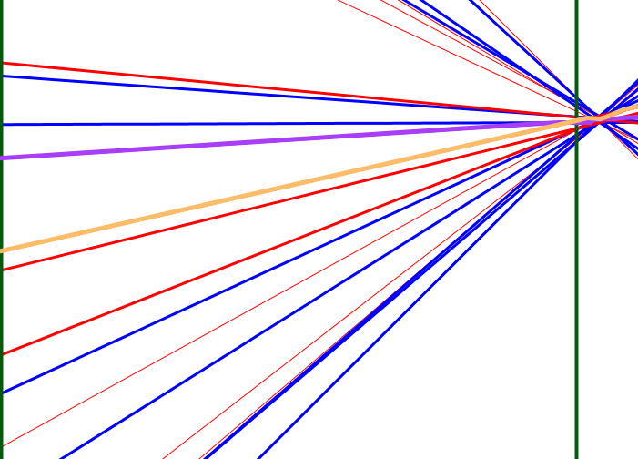
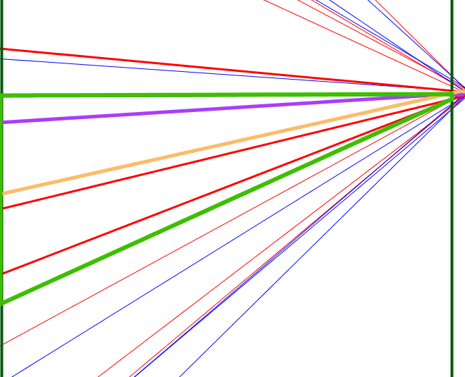
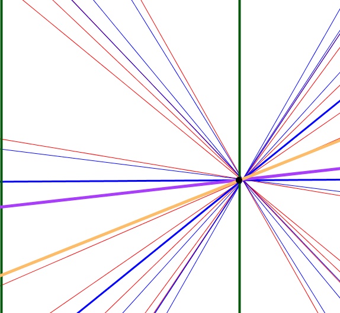
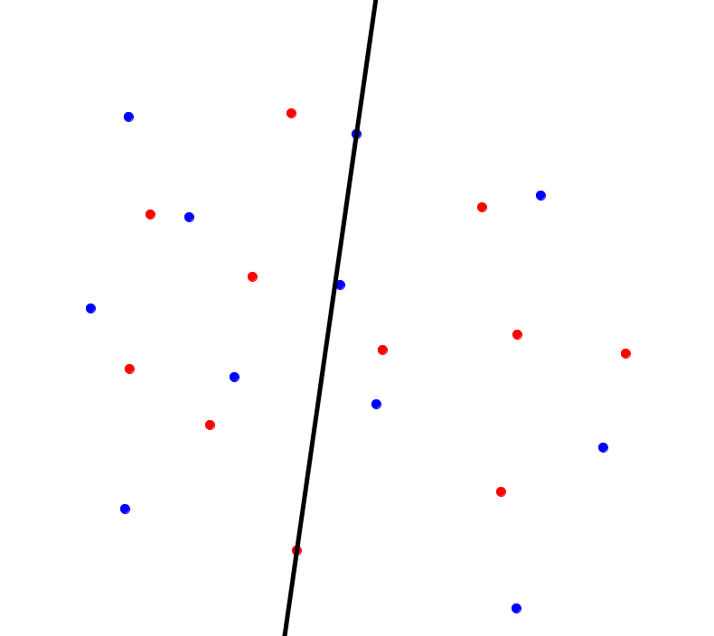

View Applet
View Applet for Java 1.5
Explanation of Algorithm
First start with a set of red and blue points. The goal is to find a line which splits the red points in half and the blue points in half. Below is a sample set of points.

First we take the dual of the points. Thus for every point we will now have a line. Now the problem is to find a point which has half of the red lines above it and half of the red lines below it as well as half of the red and blue lines above and below.
For the red and blue lines we will look at the median level. The median level for the red lines is orange and for the blue lines is purple. At every x value the median level is the y value such that exactly half of the lines are above and below it. Thus the median levels are piecewise linear.
Because the lines are in general position we can show that the red and blue median levels intersect an odd number of times. We will work to keep the odd intersection property throughout the algorithm. The intersection of two median levels is a point with half of each type of line above and below which is why we keep track of the median levels. Ensuring the odd intersection property gaurentees that there is at least one intersection of the median levels left.

We always work inside of a given x interval at the start of the interval that range is negative infinity to positive infinity. There are more red lines so we start by working on them. We randomly pick an intersection point and split the x interval based on the x value of that intersection point. Because the median levels intersect an odd number of times one of the halves must also have that property we will then operate on that region. We continue splitting until with high probability we can claim that less tham 1/32 of the intersection points are in the x interval.
Note: the lines have been scaled to include all intersection points.

Now we construct a trapezoid with sides on the x interval we are working on. If you sort the red lines by where they intersect the left end of the x interval the trarpzoid goes from 1/8 of the liens above the interval to 1/8 of the lines below the interval. The same is true for the the right side of the interval.

Now we remove all red lines that are entirely above or below the trapezoid. We can prove that this will remove at least half of the red lines with high probability.

That is one iteration, now there are more blue lines than red so we repeat the same process on them. We start with the same x interval. First split the x region.

Construct the trapezoid and remove all blue lines entirely above or below it.

When the number of lines left is small we use a brute force algorithm to compute the answer. The black point is the solution. The solution is always at the intersection of two median levels.

We now return to the primal and see that the solution is indeed a ham sandwich cut.
